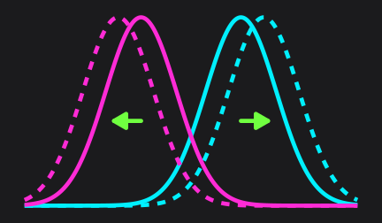
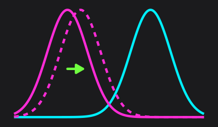
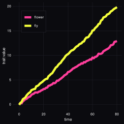
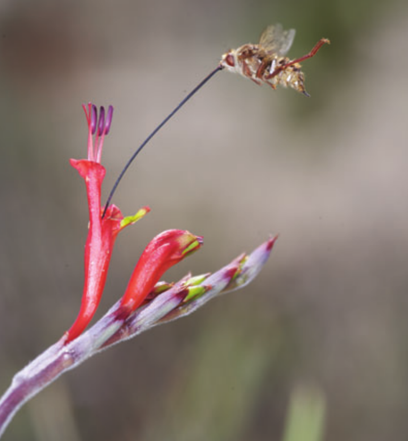
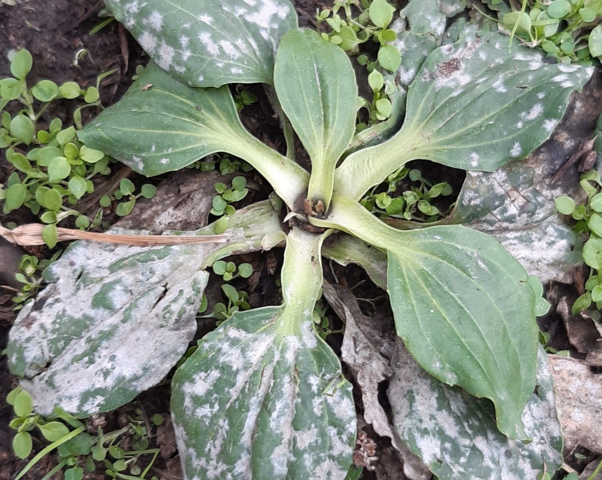

The Ecology and Geography of Coevolution
Concepts + case studies
Bob Week -
BIOL227 -
Kiel University
Many uses of the word Coevolution
The most important and coolest meaning is
Coevolution of two (or more) species due to ecological interactions
Interspecific Coevolution is a Massive Topic
- Host-parasite coevolution
- Major transitions of evolution
- Structure and stability of mutualistic networks
- Competition and coexistence
- Local Adaptation
Roadmap
Act I: What is coevolution?
- Definitions
- Representative forms of coevolution
Act II: The ecology of coevolution
- Coevolutionary outcomes of ecological interactions
- Ecological outcomes of coevolutionary dynamics (ie, eco-evo feedback!)
- The community context
Act III: The geography of coevolution
Spatial structure of ecological interactionsDeterminants of host-parasite local adaptationThe spatial signature of coevolution
Learning Outcomes
- Define coevolution precisely (and say what it is not)
- Recognize how coevolution can maintain genetic diversity
- Explain how ecology and coevolution feedback on each other
Act I: What is coevolution?
Conditions for Coevolution
DEFINITION: Coevolution occurs when
the interaction between a pair of species alters selection pressures on both species and
both species exhibit an evolutionary response to the altered selection pressures
Review:
- What is selection?
- What is an evolutionary response to selection?
Read:
“When is it coevolution?”, Janzen 1980
DEFINITION: Selection occurs when fitness and phenotype covary
DEFINITION: A phenotype is any measurable attribute of an organism
DEFINITION: Fitness is the lifetime reproductive output of an individual
Adaptation the Evolutionary Response to selection
DEFINITION: Adaptation is the inherited/evolutionary resposne to selection

Coevolution is Co-adaptation
Coevolution ⇔ both species adapt in response to selection caused by interaction
Examples of Coevolution: Character Displacement
- Interaction type: resource competition along a continuous niche axis
- Altered selection: divergent resource use/specialization (directional selection)
- Coevolutionary response: both species evolve to reduce resource competition

Examples of Coevolution: Mutualistic Matching
- Interaction type: mutualism w trait-matching (eg, plant-poll. phenology)
- Altered selection: positive freq. dependent selection (stabilizing selection)
- Coevolutionary response: loss of polymorphism (decr. genetic variation)

Examples of Coevolution: Trench Warfare
- Interaction type: host-parasite w lock-key (eg, viral receptor binding)
- Altered selection: negative freq. dependent selection (diversifying selection)
- Coevolutionary response: maintenance of polymorphism (incr. genetic variation)

Examples of not Coev: Unilateral Matching
- Interaction type: commensalism w trait-matching
- Why not coev?: selection is not modified for host species

Examples of not Coev: Unilateral Displacement
- Interaction type: resource competition along niche axis
- Why not coev?: niche location not a heritable trait for blue species

Act II: The Ecology of Coevolution
Taxonomy of ecological interactions

A classic coevolutionary woozle

A classic coevolutionary woozle (debunked!)

A pollination-based counter example
- Pollinator fly:
- Moegistorhynchus longirostris
- Flower:
Question:
- If mutualism leads to matching, why the long face?
The Phenotypic Interface of Interaction
The Phenotypic Interface of Interaction
(Evidence for) Selection Due to Interaction
- Fly trait > flower trait:
- Flower trait > fly trait:
- more flower pollen transferred
Question:
- If both do better with greater traits, what would coevolution lead to?
A mutualistic arms race!
Q: what if one outpaces the other?
Many Possibilities
(left) mutualism maintained (right) mutualism from parasitism
It gets weirder…
Indirect Consequences of Coevolution

Fly visits Babiana thunbergii

Malachite Sunbirds pollinate B. thunbergii
- Different fly pollination guilds
- Partial spatial overlap
- Coevolutionary hot/cold spots
Act III: The Geography of Coevolution
Spatially Distributed Populations

Powdery Mildew Parasitizing Plantago lanceolata

Spatial Host-Parasite System